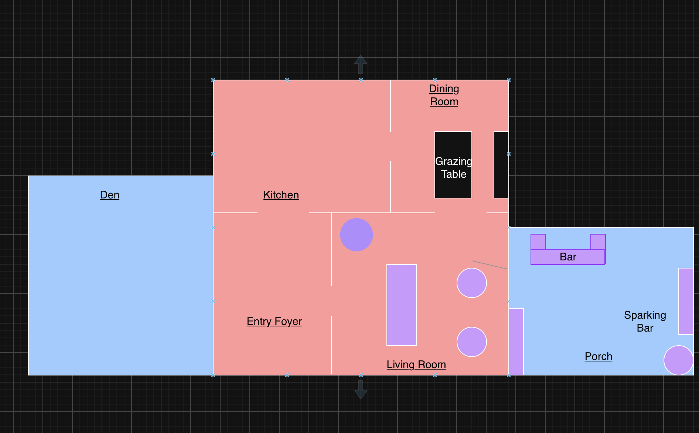

Rainy Day Plan
If the weather doesn't cooperate, the party moves inside. Same night, same vibe — here's where everything goes.
The Call
- Decision
- We will plan to set up inside given the forecast — final confirmation will be made when the group comes at 1pm on Saturday.
- What moves
- The bar and grazing table move indoors. Guests flow through the Entry Foyer into the Living Room, Den, and Dining Room.
- What stays the same
- Timing, food, drinks, cake, and the piñata plan don't change — just the location.
Indoor Floor Plan
Entry Foyer → Living Room → Den, with the Grazing Table in the Dining Room and the Bar out on the Porch.

Room by Room
- Entry Foyer
- Where guests come in from the front door — flows straight into the Living Room.
- Living Room
- Main gathering space, existing furniture stays as-is for seating and mingling.
- Den
- Overflow seating and mingling space, connected to the Living Room.
- Kitchen
- Staging area — extra ice, drinks, and grazing table backstock live here, out of the main flow.
- Dining Room
- Grazing table goes here, set up on the dining table.
- Porch
- Bar and Sparkling Bar are set up here — screened in, already has string lights and seating.
Porch — Bar & Sparkling Bar
The bar cart moves onto the porch, with a second "Sparkling Bar" station alongside it. Already set up: string lights, ice bucket, folding chairs, and a kraft-paper-covered table for the sparkling station.
Dining Room — Grazing Table
The grazing table sets up right on the dining table — sideboard alongside has extra glassware and bottles.